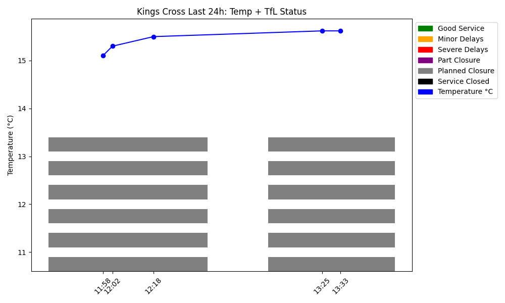
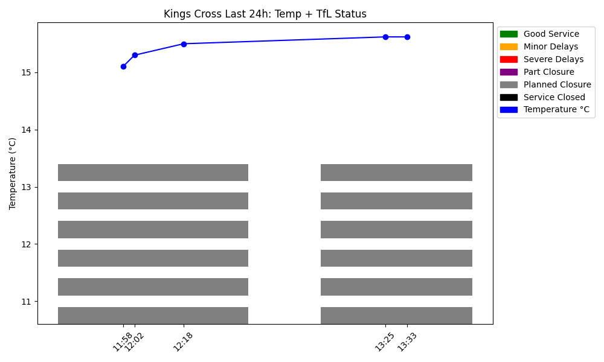
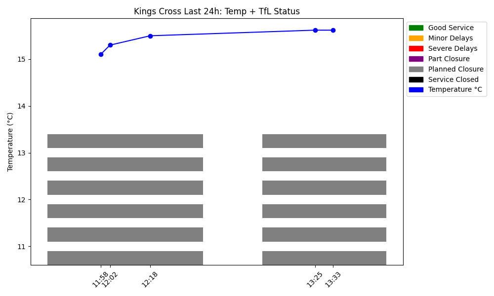

🏙️ Kings Cross Live Dashboard
Updated automatically every hour
🔄 Refresh Now
📊 Current Dashboard

🎫 Upcoming Events in King’s Cross
Loading events...
🚇 TfL Line Status at King’s Cross
Loading TfL data...
 
